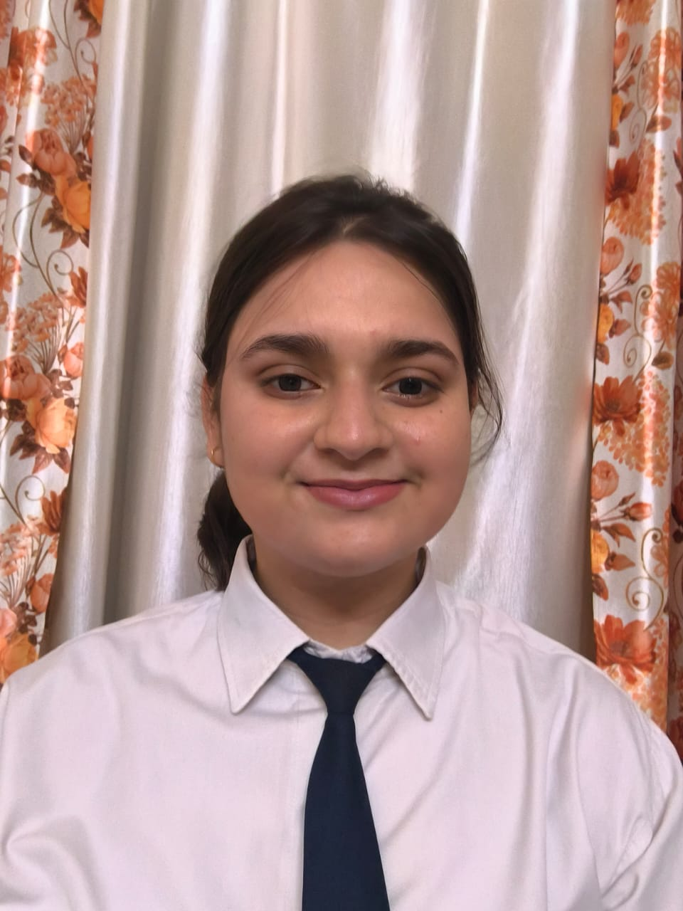

Eminent Engineer
Highly motivated engineering undergraduate with a passion for web development and continuous learning. Seeking a position where I can utilize my skills and abilities to make a positive impact on the organization. Enthusiastic and detail-oriented web developer with strong skills in HTML, CSS, JavaScript, and responsive design. Passionate about building user-friendly, visually appealing websites and web applications. Familiar with front-end frameworks and eager to expand my knowledge. Quick learner dedicated to continuous improvement and staying updated with emerging technologies to deliver modern, efficient solutions.
Moradabad Institute of Technology
SS.Children Academy, Moradabad
SS.Children Academy, Moradabad
Assisted in designing and generating creative text and image content using generative AI models. Researched and experimented with prompt engineering techniques to improve output quality and relevance. Gained hands-on experience with tools and frameworks such as OpenAI APIs, Hugging Face, and other AI platforms
Developed a responsive personal portfolio website using HTML, CSS, and JavaScript to showcase projects, skills, and contact information. Features a clean, modern UI, smooth scrolling, and interactive project gallery
Built a responsive web app using HTML, CSS, and JavaScript that generates AI images from user-provided text prompts, featuring an intuitive interface and dynamic image display.